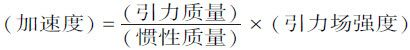

“如果我拾起一块石头，然后放开手，为什么石块会落到地上呢?”通常对于这个问题的回答是：“因为石块受地球吸引。”现代物理学所表述的回答则不大一样，其理由如下，对电磁现象更仔细地加以研究，使我们得出这样的看法，即如果没有某种中介媒质在其间起作用，超距作用这种过程是不可能的。例如，磁铁吸铁，如果认为这就是意味着磁铁通过中间的一无所有的空间直接作用于铁块，我们是不能感到满意的；我们不得不按照法拉第的方法，设想磁铁总是在其周围的空间产生某种具有物理实在性的东西，这种东西就是我们所称的“磁场”。而这个磁场又作用于铁块上，使铁块力求朝着磁铁移动。我们不在这里讨论这个枝节性的概念是否合理，这个概念的确是有些任意的。我们只提一下，借助于这个概念，电磁现象的理论表述要比不借助于这个概念满意得多，而对于电磁波的传播尤其如此。我们也可以用相似的方式来看待引力的效应。
地球对石块的作用不是直接的。地球在其周围产生一引力场，引力场作用于石块，引起石块的下落运动。我们从经验得知，当我们离地球越来越远时，地球对物体的作用的强度按照一个十分确定的定律减小。从我们的观点来看，这意味着： 为了正确表述引力作用如何随着物体与受作用物体的距离的增加而减小，支配空间引力场的性质的定律必须是一个完全确定的定律。大体上可以这样说： 物体(例如地球)在其最邻近处直接产生一个场；场在离开物体的各点的强度和方向就由支配引力场本身的空间性质的定律确定。
与电场和磁场对比，引力场显示出一种十分显著的性质，这种性质对于下面的论述具有很重要的意义。在一个引力场的唯一影响下运动着的物体得到了一个加速度，这个加速度与物体的材料和物理状态都毫无关系。例如，一块铅和一块木头在一个引力场中如果都是从静止状态或以同样的初速开始下落的，它们下落的方式就完全相同(在真空中)。这个非常精确的定律可以根据下述考虑以一种不同的形式来表述。
按照牛顿运动定律，
我们有(力)=(惯性质量)×(加速度)
其中“惯性质量”是被加速的物体的一个特征恒量。如果引力是加速度的起因，我们就有
(力)=(引力质量)×(引力场强度)
其中“引力质量”同样是物体的一个特征恒量。从这两个关系式得出：

如果正如我们从经验中所发现的那样，加速度是与物体的本性和状况无关的，而且在同一个引力场强度下，加速度总是一样的，那么引力质量与惯性质量之比对于一切物体而言也必然是一样的。适当地选取单位，我们就可以使这个比等于一。因而我们就得出下述定律： 物体的引力质量等于其惯性质量。
这个重要的定律过去确实已经记载在力学中，但是并没有得到解释。我们唯有承认一个事实才能得到满意的解释，这个事实就是： 物体的同一个性质按照不同的处境或表现为“惯性”，或表现为“重量”(字面意义是“重性”)。在下节我们将说明这个情况真实到如何程度，以及这个问题与广义相对性公理是如何联系起来的。